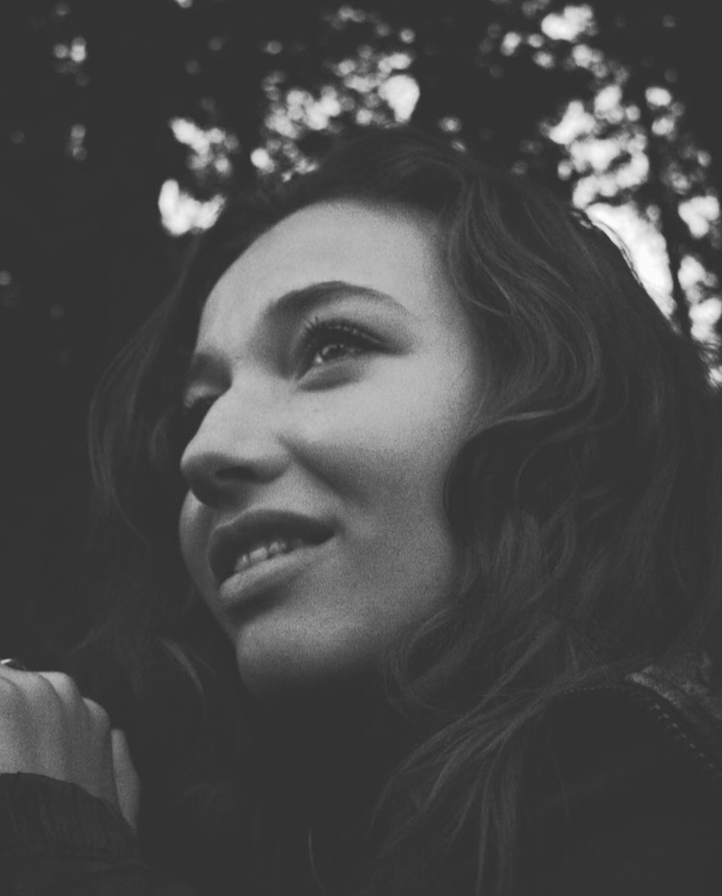

Get in touch
I am a UI/UX Designer inspired to make life easier with innovative design. I am currently pursuing my graphic design degree at Portland State University after three years of freelance experience.
I continue to explore design skills every day. I synthesize user research to find key features for a user-centered solution. I work on teams to develop user flows, create wireframes, organize insights into affinity diagrams, and develop prototypes from low to high fidelity.
I am looking to work on a team of motivated individuals to create something spectacular together. I put my all into the work I produce, and I want to be challenged by those around me to continue to grow my design.